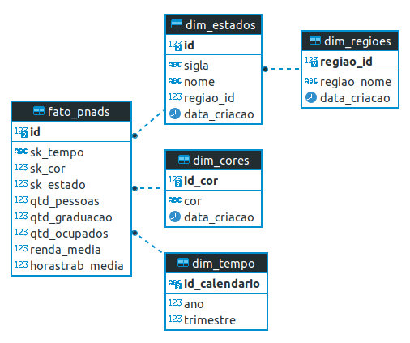
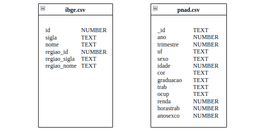
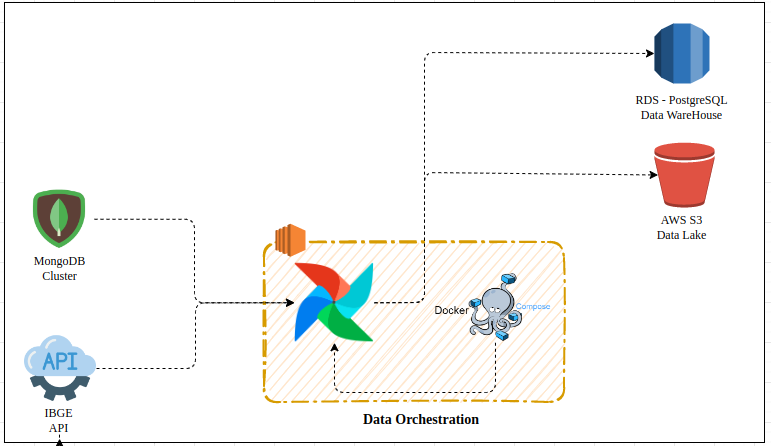
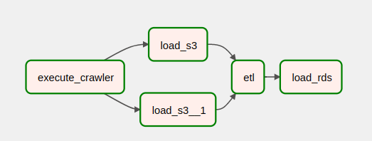

Documentacao Projeto Pipeline de Dados
Projeto pratico em modo de desafio com a criacao de um pipeline de dados completo desenvolvido como atividade avaliativa final do Bootcamp Engenheiro de Dados da XPEducacao.
Estrutura do Projeto
├─ conf: pasta de configuracoes do projeto
│ └─ config.yaml: arquivo de configuracao das variaveis do projeto
├─ dags: pasta de dags do Apache Airflow
├─ data: pasta auxiliar para armazenamento de dados durante a execucao das dags
├─ docs: pasta de documentacao do mkdocs
│ └─ media
│ └─ index.md: pagina inicial da documentacao do projeto
├─ logs: pasta de logs do Apache Airflow
├─ plugins: plugin do Apache Airflow
├─ mkdocs.yaml: arquivo de configuracao do mkdocs
├─ README.md
├─ docker-compose: arquivo para realizar o build dos containers docker do projeto
Objetivo do Projeto
O pipeline foi criado a partir dos requisitos propostos pelo desafio.
O projeto extrai dados da API de regioes do IBGE e de um cluster MongoDB com os dados da PNAD 2020
Os dados em sua camada raw sao colocados em um bucket da AWS S3 que servira como Data Lake.
Por fim, os dados sao filtrados e processados de acordo com as regras de negocio, modelados em formato dimensional e inseridos em um servidor PostgreSQL criado no AWS RDS e que servira como Data Warehouse.
Modelo Multidimensional do Data Warehouse - Snowflake

Estrutura das tabelas do Data Lake

Stack Tecnologica
Apache Airflow 2.0
AWS RDS
AWS S3
Docker 20.10.17
Python 3.10.7
Decisoes Arquiteturais do Projeto
O Apache Airflow e o orquestrador de pipelines mais utilizado do mercado, personalizavel e permite a escalabilidade do projeto com a possibilidade de processamento distribuido.
O AWS RDS foi escolhido por ser uma solucao totalmente gerenciada, permitir a escolha de diferentes provedores de bancos de dados e escalabilidade. A engine Postgres e um dos bancos de dados mais populares do mundo, alem de ser um software livre e com documentacao muito completa.
O AWS S3 e muito utilizado no mercado pela sua flexibilidade e a possibilidade de consumo dos dados
em seu formato nativo. Alem disso e possivel separar o projeto em uma estrutura de pastas que auxilia o
armazenamentos dos dados em todos os estagios do pipeline. Caracteristica essa muito importante para na criacao de Data Lakes.
O Docker permite uma maior compatibilidade e flexibilidade no ambiente de execucao do projeto. Alem disso
pode ser implementado nao apenas em servidores como tambem em solucoes serverless disponiveis em todas as
plataformas de cloud.

Pipeline de Dados Apache Airflow

1. Task execute-crawler: task responsavel por extrair os dados da pnad armazenados no cluster MongoDB e da api de regioes do IBGE.
2. Task load-s3 task responsavel por armazenar os dados da pnad extraidos do cluster MongoDB no s3.
3. Task load-s3-1: task responsavel por enviar os dados da api do ibge para o s3.
4. Task etl: task responsavel por transformar os dados de acordo com o modelo dimensional definido.
5. Task load-rds: task responsavel por carregar os dados no banco de dados.
Como Executar este Projeto
- Crie uma instancia no
AWS EC2ou outro provedor da sua escolha, realize o download deste repositorio e execute o docker-compose para realizar o build dos containers:
docker-compose up -d
- Criar um bucket no
AWS S3com o nome data-lake-pnad. - Crie um servidor de banco de dados
PostgreSQLutilizando aAWS RDS. Alem disso, crie o databasedw_pnad. - Adicione as credenciais de acesso da API e do cluster MongoDB no arquivo
./conf/config.yaml. - Adicione as credenciais da aws para acesso ao S3 e os dados de acesso ao banco de dados no arquivo
./conf/config.yaml. - Crie as tabelas no banco de dados executando os comandos do arquivo
databases.sql. - Executar o pipeline de dados no
Apache Airflow.